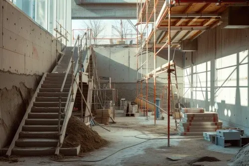

A Igreja Matriz de Nossa Senhora da Assunção apresenta características típicas da arquitetura colonial brasileira, sendo construída com materiais tradicionais utilizados no período. Sua estrutura reflete técnicas construtivas antigas e um cuidado artístico evidente, especialmente nos elementos decorativos internos. O templo combina resistência estrutural com riqueza estética, destacando-se pelo uso de pedra, cal e madeira, além de apresentar forte influência dos estilos jesuítico e barroco. Esses elementos são visíveis tanto na parte externa quanto no interior da igreja, revelando sua importância histórica e artística.
Materiais e características:
- Estrutura principal em pedra, cal e madeira
- Uso de técnicas construtivas coloniais
- Presença de talha dourada (principalmente no altar)
- Elementos decorativos em madeira entalhada
- Revestimentos com detalhes em dourado
- Fachada com características dos estilos jesuítico e barroco
Elementos internos de Destaque:
- Altar principal com talha dourada de alta qualidade (datado do século XVII)
- Retábulo ricamente decorado com símbolos religiosos
- Coroamento com simbologia bíblica
- Imagem de Nossa Senhora da Assunção, padroeira da cidade
